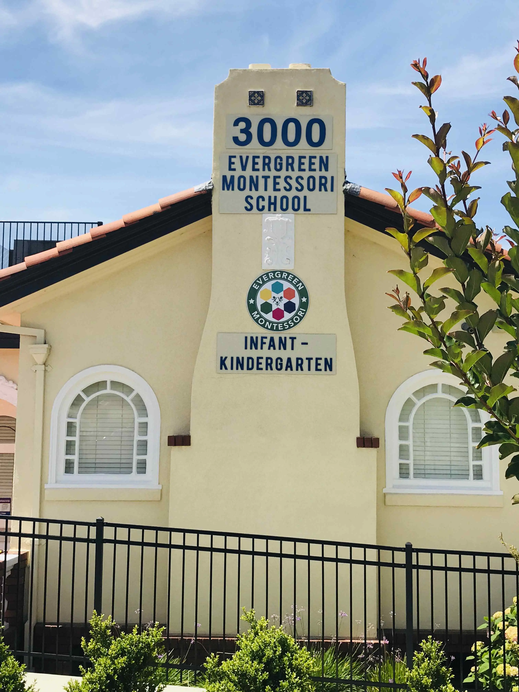
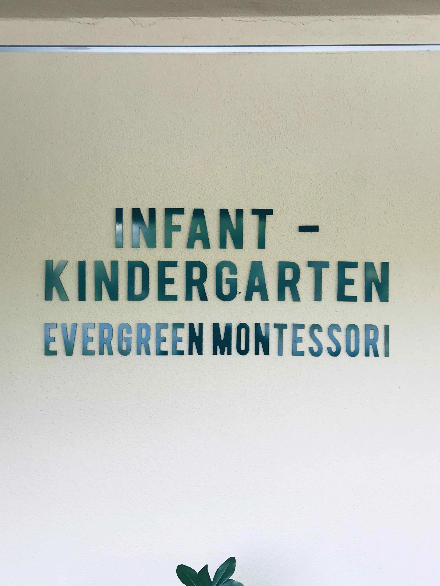
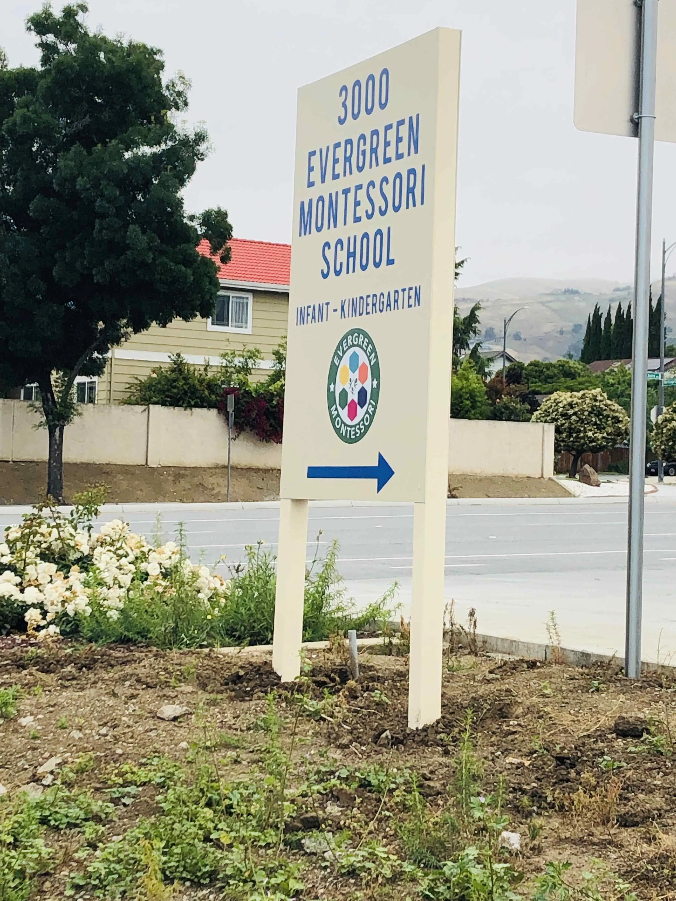
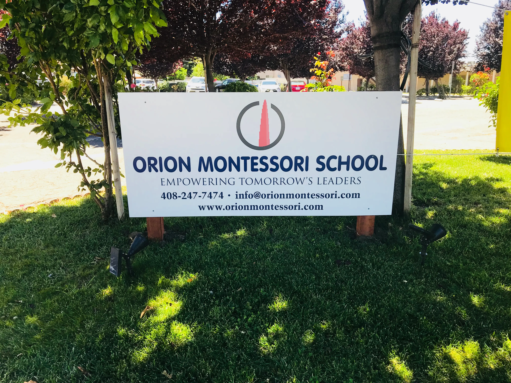
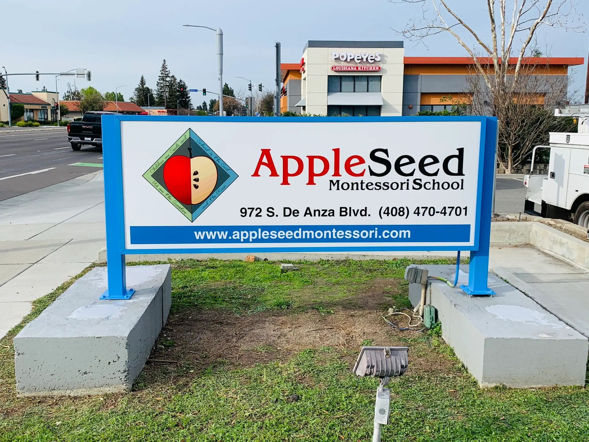
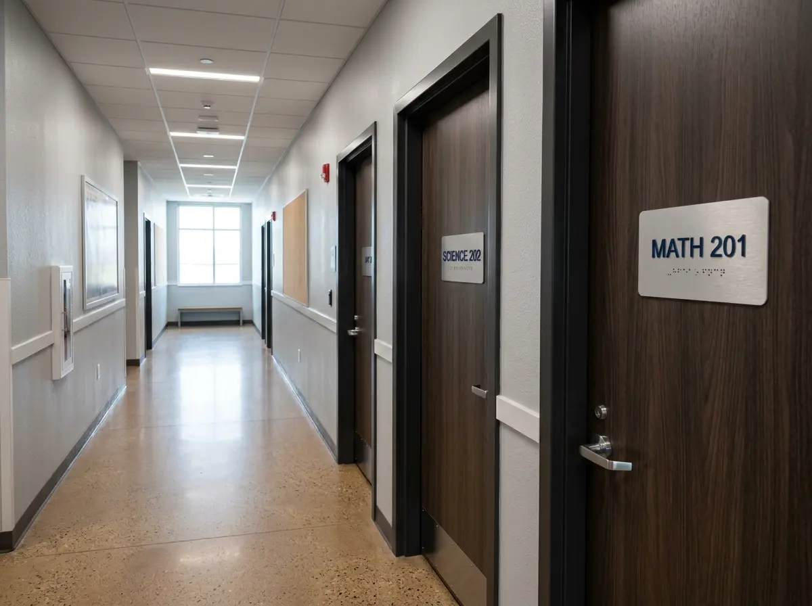

Monument signs, post & panel identification, interior dimensional letters, ADA-compliant room signs, and enrollment banners for private schools, Montessori programs, and charter schools across Santa Clara County. Full-service design through installation.
For private schools, Montessori programs, and charter schools, signage does real enrollment work. A well-executed exterior sign communicates that the school is established, well-funded, and serious about its environment — all things parents are evaluating when they visit for a tour. A post and panel sign at the street gets you visible to families driving by. A monument sign with your address and logo gives confidence to first-time visitors that they're in the right place. And the dimensional letters in your lobby or on your classroom building wall reinforce the school's identity every time a parent walks in.
Silicon Valley has a dense concentration of private schools — Montessori programs, language immersion schools, faith-based private schools, Waldorf programs, and private college-prep high schools — and new ones open every year as the population grows and parents look for alternatives to the public system. Every new school needs a complete sign package: exterior identification, interior branding, classroom and office door signs, and enrollment-season banners.
We've worked with multiple Montessori schools across San Jose and the South Bay, including full sign programs covering building-mounted identification, roadside post and panel signs, and interior dimensional letter installations. The photos on this page are from our completed installations — real schools in the Bay Area that we designed, fabricated, and installed.
Monument signs, post & panel identification, building-mounted signs, and interior dimensional letters — all real installations at local schools.

Evergreen Montessori · Building ID
Evergreen Montessori · Interior Dimensional
Evergreen Montessori · Post & Panel
Orion Montessori · Post & Panel
AppleSeed Montessori · Monument Sign
Private School · ADA Sign PackageNew schools need a complete sign program. Established schools often need one sign replaced or upgraded. We handle both.
Freestanding illuminated cabinet signs at your school entrance or driveway — the highest-visibility sign your school has. Steel post-mounted or masonry-base monuments with full-color printed panels, school logo, address, and phone number. Permitted; City of San Jose sign permit required for new installations.
Street-Visible · Illuminated · PermittedTwo-post Dibond or aluminum panel signs — the most common school exterior sign type in Silicon Valley. Flat or angled panels in your school colors, with logo, name, address, and directional arrow if needed. Cost-effective, professional, and easy to update if the school rebrands. Non-illuminated and solar-spotlight-lit options available.
Dibond · Aluminum · Full ColorAcrylic sign panels, dimensional letter blocks, or routed Dibond panels mounted directly to your building facade or architectural features — address number, school name, and logo panels. Ideal for schools on a shared campus or multi-tenant building where a freestanding monument isn't practical or permitted.
Facade Mount · Acrylic · ArchitecturalFlat-cut acrylic, PVC, or metal letters applied to your lobby wall, reception area, or classroom building interior — school name in your brand colors and font. The sign families see the moment they walk in for a tour. Metallic-finish acrylic gives a premium look at a fraction of the cost of brushed aluminum dimensional letters, and it's what we used at Evergreen Montessori.
Lobby · Foyer · Classroom BuildingTactile signs with Grade 2 Braille and raised characters for every permanent room — classrooms, offices, restrooms, library, gym, multi-purpose room, and storage. Required under California Title 24 for any public accommodation, including private schools. Often overlooked by newly opened schools; we audit your facility and provide a complete ADA sign package quote.
Required · Title 24 · Every RoomFull-color vinyl banners for open enrollment season, open house events, back-to-school promotions, and school milestones. Building-mounted, fence-mounted, or on banner stands for lobby and hallway use. Fast turnaround — a new school opening in 4 weeks can have banners ready before the building signs are installed.
Open Enrollment · Open House · EventsWe've built complete sign packages for several Montessori schools across the South Bay. Here's what that experience means for your project.
The photos on this page are from actual schools we've worked with in San Jose and Santa Clara County — Evergreen Montessori, Orion Montessori, AppleSeed Montessori. You can see the material choices, installation quality, and finished results before we ever submit a quote. When you bring us a new school project, we've already solved the same problems several times over.
Monument signs and post & panel signs require a City of San Jose sign permit — and the permit process can take 3–6 weeks. We pull the applicable sign ordinance for your address, prepare the permit submittal package, and manage the process. Your school doesn't need to deal with the city's permit portal. We tell you what's approved at your location before design starts.
If you're opening a new private school or Montessori program, we quote the complete opening sign package — exterior identification, interior lobby sign, classroom and office door signs, restroom signs, and enrollment banners — as a single program. Staggered installation is available: banners first for pre-opening visibility, then building signs and interior signs before the first day of school.
Private school sign budgets vary widely — a new Montessori program often has tight startup costs, while an established private high school may have a capital improvement budget. We quote in multiple material tiers: PVC flat-cut letters for cost efficiency, metallic acrylic for a polished mid-range finish, and brushed aluminum dimensional letters for premium installations. Same design, different material — clear pricing at each level.
Two tools that help you get organized — useful when you're presenting sign options to a school board or director.
What exactly goes on your monument sign or post & panel? School name, tagline, phone, address, website, grade levels — our tool helps you figure out the right hierarchy before design starts, so we're not iterating on content during the proofing stage.
Try the Sign Copy Tool →Fill out your school address, sign types needed, existing logo files, brand colors, and approximate budget. We'll come back with a complete itemized quote ready for your school's decision-maker to review and approve.
Start Your Design Brief →San Jose and Santa Clara County have hundreds of private schools across every tradition and age group. We've worked with several — here's the range of programs we serve.
Infant through elementary Montessori programs — often in converted residential buildings or shared commercial spaces. We've done multiple Montessori sign programs in San Jose.
Exterior monument signs, building identification, interior wayfinding, classroom door signs, and ADA room ID packages for private elementary and middle schools.
Larger campus sign programs covering multiple buildings, athletic facility identification, auditorium signs, office suite signs, and campus wayfinding for private college-prep high schools.
New charter schools need a full sign package quickly and on a budget. Post & panel identification and interior branding are the most cost-effective way to get a new charter school properly signed before opening day.
Bilingual sign programs in English plus Spanish, Mandarin, French, or other languages — for language immersion private schools where signage may need to reflect both languages throughout the building.
Complete sign programs for Catholic schools, Christian academies, and other faith-based private schools — exterior identification, interior branding, and full ADA room ID compliance packages.
Sign programs for Waldorf and progressive schools that need signage reflecting a warmer, less institutional aesthetic — natural materials, handcrafted-look finishes, and softer color palettes.
Building identification, post & panel signs, enrollment banners, and ADA signs for licensed preschool and child development center operators across San Jose and Santa Clara County.
Private school sign programs often include these related products.
New school opening or existing school that needs an upgrade — the process is the same. Fast, organized, and scheduled around your school calendar.
We visit your school, photograph the exterior and interior, check your address against the applicable sign ordinance, and walk through every sign need — monument sign feasibility, post & panel options, building facade attachment points, interior sign locations, and ADA sign gaps. You get a complete picture before anything is quoted.
We produce an itemized quote covering every sign type separately — exterior signs, interior signs, ADA signs, banners — with material tier options where relevant. Clear pricing your director or board can review and approve, with no hidden installation costs or surprises at invoicing.
Once approved, we design every sign and provide digital proofs for sign-off. Monument and post & panel signs go through the City of San Jose permit process — we manage the submittal. Interior signs go straight to fabrication. For new school openings, we start with banners so you have street presence while permits are processing.
We schedule installation to avoid disrupting classes — early morning or weekend installation for exterior signs, weekday scheduling for interior signs. New school openings are coordinated to have all critical signs in place before the first day. We provide a complete project record for your files.
Based in San Jose — we design, fabricate, and install private school signs throughout the South Bay.